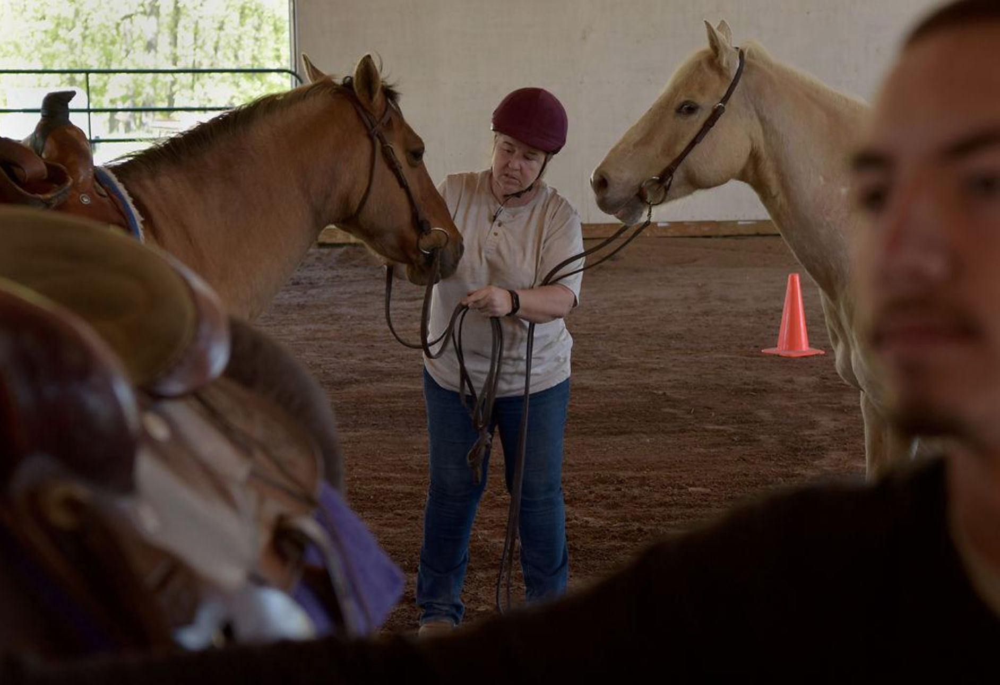
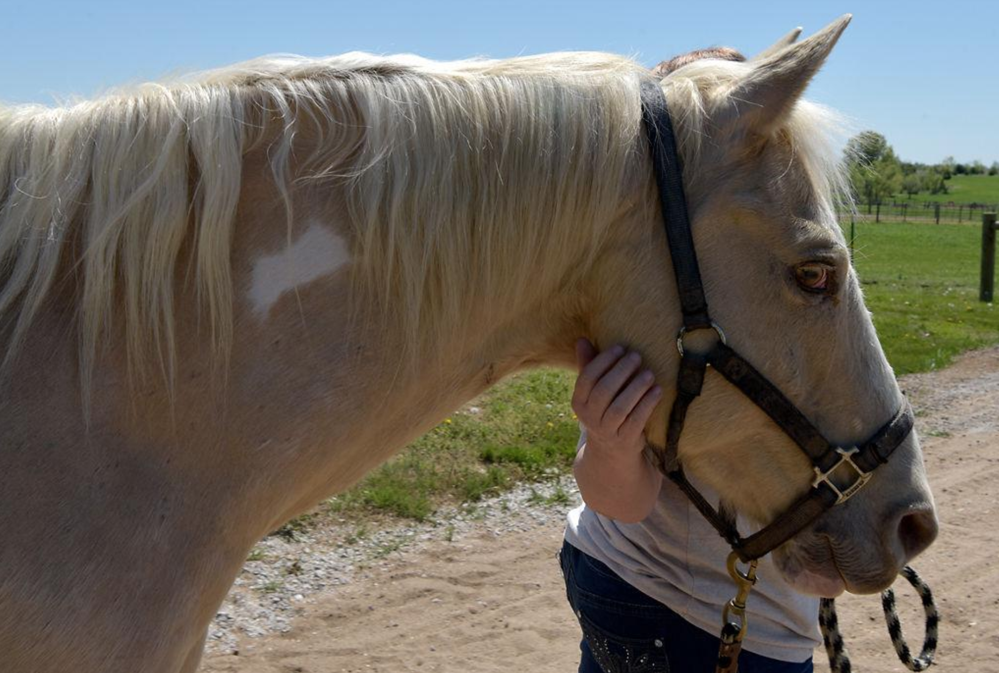
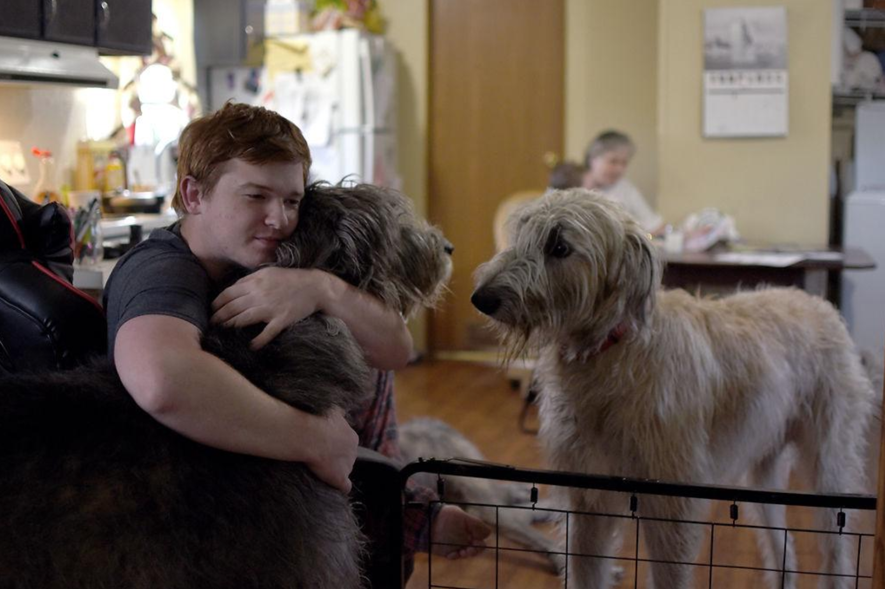

Amy Jo Domonkos said that “opportunity knocked” when she came to Columbia two years ago. After two years in the military and seeking medical services for her adoptive son Nathan, 10, she was looking for a home for her family and found one in Stonegate Mobile Home Community in Columbia.
She has been planting roots ever since, whether building a new home from the ground up with her mother, Ramona Domonkos, and son Justin or horseback riding at Coyote Hill Christian Children’s Home.
Amy Domonkos said raising a 10-year-old boy with Treacher Collins syndrome and autism brings new things for the family to learn every day.
Columbia has provided them closer proximity to Nathan’s medical treatments than at their previous home, which came with a two-hour commute to the nearest hospital.
They are considering a move to give Nathan more space to enjoy the same activities she loved growing up in the Pennsylvania countryside, including raising four Irish wolfhounds. One of them, Brody, is Amy’s service dog and has helped her with each transition.
“He’s always been a one-person dog,” she said.
Each step has provided a new adventure for the Domonkos family.
“We’re not like your typical family,” Ramona said. “We like to live each day fully because life is too short.”
Their home is vibrant with conversations and ribbing, with the wolfhounds at the center of every activity.
In the early mornings, Ramona helps her daughter Amy prepare for work while she reassures Nathan over homemade pancakes.
“You’ve got the best grammy in all the world, don’t you, best bud?” Conversations with Nathan are always avenues to talk about Godzilla, his passion in life, they say.
For Nathan, being “special” means “love.” Amy and the family cultivate that love every day, taking each step to ensure he lives a life just like any other 10-year-old kid.
Nathan says he feels the most loved when he’s fishing with Amy at the neighborhood pond, finding the “sweet spots” where they can find the most catfish. He always seems to catch the first fish of the day, which Amy and Ramona celebrate each time.
Throughout the transitions in Amy’s life — in the midst of building a life after the war, building a new home and providing for her family — she says each experience has taught her a lot.
“I wouldn’t trade any of that,” she said. “It’s all about how you make it. If you make it bad, it’s gonna be bad. If you make it good, it’s gonna be good. That’s just what it is.”


